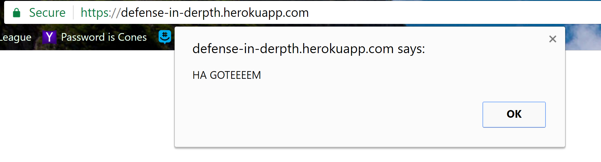
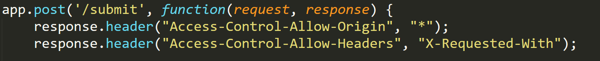
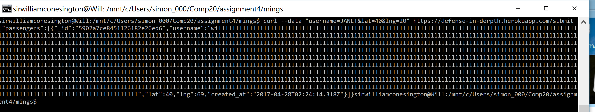

The product being reviewed is a back-end implementation for a taxi-service website similar to Uber. The code being checked is written in Node.js and uses Express. It contains three different pages accessible by the client, two GET routes and one POST route.
Correct Implementation
- One of the GET routes, accessed simply with a "/" at the end of the URL, returns html code that displays every passenger in the server-side database that requested a vehicle. It displays their username with their latitude, longitude, and when they requested the vehicle. The order of these passengers is written in descending order based on the time they requested a vehicle, hence the person who requested a vehicle most recently is displayed at the top of the page.
- The other GET route, accessed by "/vehicle.json" at the end of the URL, returns JSON script with information about a specific vehicle. The client will need to also include the username of the vehicle about which they are requesting information. This is done by adding a query string to the end of the URL with the syntax: ".../vehicle.json?username=<USERNAME_HERE>". If the username passed in does not match the username of a vehicle in the database or is not passed in as a query string, the response JSON script is simply "{}". If the username passed as a query string is in the database, the reponse is a JSON object containing the vehicle's id, username, latitude, longitude, and the time it was created at.
- The POST route is designed for passengers or vehicles to input their locations and time of request/creation into the database. If the client's submission is missing any of these parameters, it returns the script "{"error":"Whoops, something is wrong with your data!"}". Otherwise, if the username is in the vehicle database, the return script is a list of all passengers. If the username is not a vehicle name, then the return script is a list of all of the vehicles in the database.
For this assigment, I was charged with looking through the provided code and trying to find any present vulnerabilities. These vulnerabilities could allow client side access to the database that would end up returning information that the client should not know.
In order to test this application, I began by blindly testing presumed vulnerabilities. This is how I found the cross site scripting vulnerability. After some success looking for vulnerabilities without looking at the source code, I took a look at server.js, where I was able to see the other issues present.
In my testing I found a number of vulnerability. One issue allows clients to inject html script into the database. What this means is that malicious clients can alter the page that other clients see when they load the page. Another issue that I found was that the database is accessible to all clients, meaning that anyone can input data into the database. This is an issue as this data can not be trusted to be accurate. The last issue I found is that none of the inputs are checked for length or accuracy, so both incorrect and nonsensicle data can be inserted, as well as large amounts of data that could take up all of the space available in the database.
The first issue I found was cross site scripting. This allows for html code injection that can alter the page for the client. This issue is of high severity, especially when compounded with the next vulnerability that I will describe. With this vulnerability, clients can inject html code into the database as one of the parameters passed in. When in the database, this code will run when the page is loaded and alter what the client will see. This issue is in the POST route, but ends up affecting the GET "/" route, as that is when the code will take effect. This can be fixed by altering the script that is passed in in the parameters. This could be done by changing the characters common in html code, such as replacing all "<" or ">" characters with other characters such as "_" or whitespace. This issue was found by using the curl command and with my knowledge of the potential vulnerability I tried this attack and it proved successful. 
Another issue found was that CORS is enabled for any domain. This means that anyone can access and alter the data in the database. This issue was found by looking at the code written in the server.js file, under the POST route. This issue is of medium risk and can be fixed by changing the * character to only allow access from certain domains. This vulnerability is also shown in the picture below, as the database can be accessed by my personal computer. The code responsible for this is shown in this picutre. 
The last issue that I found was that there is no size limit or data verification to the data entered by the client. This issue is of medium to low severity as the issues it ranges from are either mildly inconvenient to all clients, or can cause the site to break. Without verifying the data, users can input any values that they want for the parameters, meaning that there is no certainty that any data is correct for clients using one of the two GET routes to get data. Another issue with this is that, I am assuming, the database has a limit to the amount of storage it can keep. This means that the database could fill up with one user's input and leave all other clients without access to POST. This issue was found by looking at the source code in server.js and seeing the vulnerability. This issue can be easily fixed as a simple upper limit on the number of characters inserted into the username parameter can be inserted. In addition, the lat and lng parameters could be checked to make sure they are within the range of latitudes and longitudes on earth. 
There are some serious vulnerabilities in this product. These issues allow any client to destroy the usefulness of the product, as well as, obtain information in the database that shouldn't be accessed. This is a big problem as clients will not be eager to use this site due to its vulnerabilities and the lack of trust that clients can have for the information the site returns.